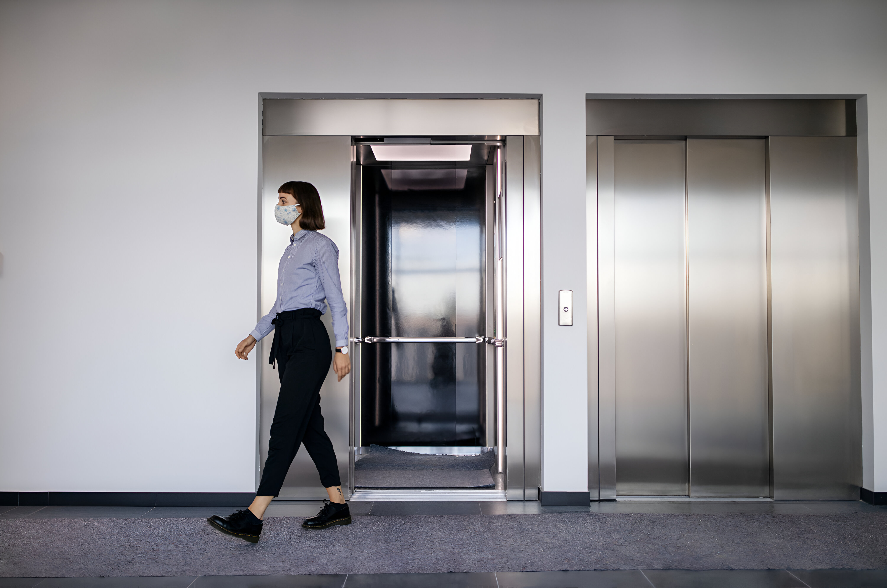
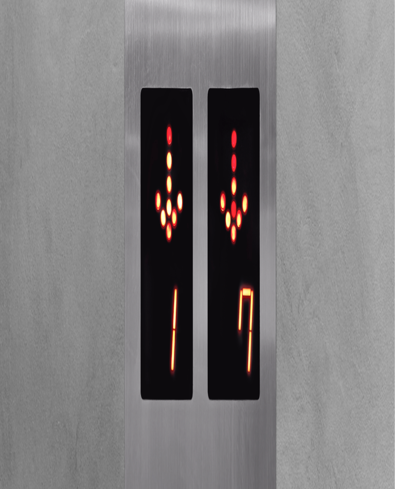
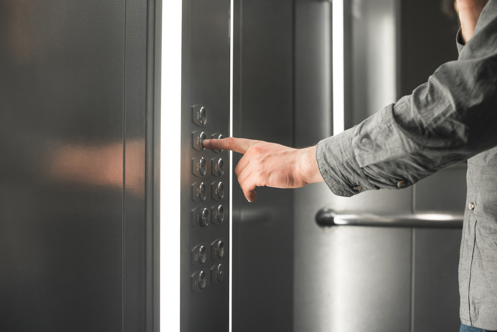
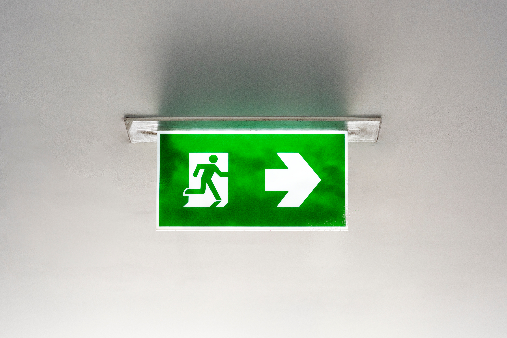
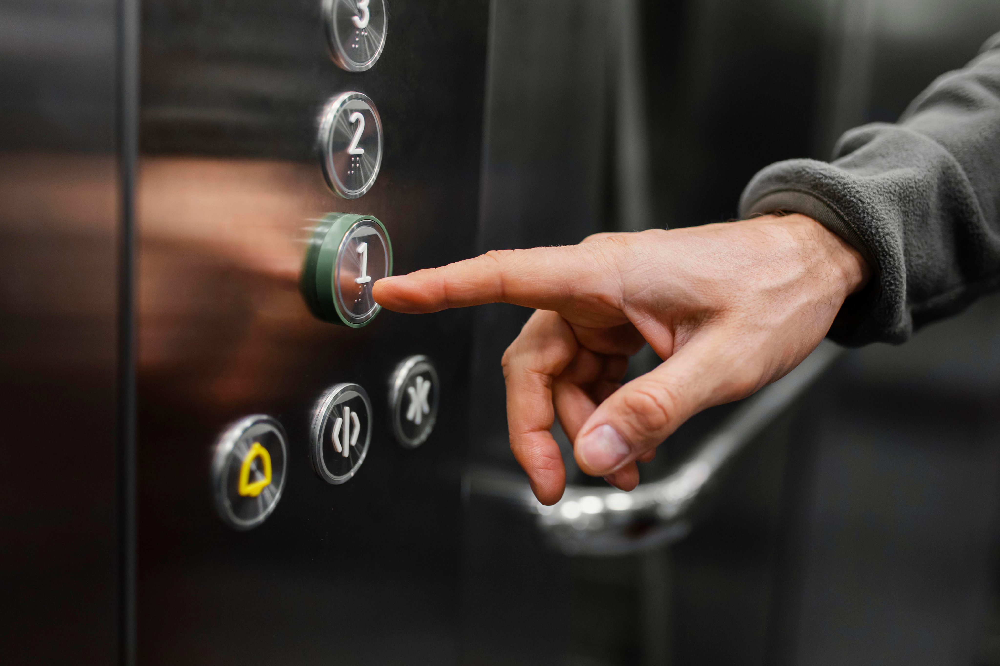

탑승 전 내부 확인
탑승 전 내부 확인
문이 완전히 열린 후 승강기 내부와 바닥 높이를 확인하고
안전하게 타고 내립니다.

 탑승 전 내부 확인
탑승 전 내부 확인문이 완전히 열린 후 승강기 내부와 바닥 높이를 확인하고
안전하게 타고 내립니다.

 문에 기대거나 충격 주지 않기
문에 기대거나 충격 주지 않기승강장 문에 기대거나 밀지 말고,
문 주변에서 장난치거나 충격을 주지 않습니다.
버튼을 불필요하게 누르거나 거칠게 다루지 않고,
승강기 안에서 뛰지 않습니다.

 갇혔을 때는 비상통화로 도움 요청
갇혔을 때는 비상통화로 도움 요청정전이나 고장으로 갇히면 문을 억지로 열거나 탈출하지 말고,
비상통화장치로 상황을 알린 뒤 구조를 기다립니다.

비상통화버튼으로 구조를 요청하고 침착하게 기다리세요.

신고 접수 및 승객 안내
유지보수업체에 즉시 연락하고, 긴급한 상황이면 119에 구조를 요청합니다.
승객과 연락을 유지하며 임의로 탈출하지 않도록 안내합니다.
구조 및 현장 관리
승강기 위치와 승객 상태를 확인하고, 구조 작업 중 다른 이용자의 접근을 통제합니다. 문 개방·전원 차단·수동 조작 등 전문 구조 작업은 교육받은 담당자와 전문기술자가 해당 설비의 구조 절차에 따라 수행합니다.
